Tracking gut health without the anxiety it causes.
A pocketable IoT device and companion app that lets people with chronic GI conditions log symptoms in seconds, without screens, overwhelm, or medicalised interfaces.
1 in 5 people in the UK have a GI condition. The tools meant to help make things worse.
Existing apps demand frequent logging and create hyper-awareness that worsens anxiety. The gut–brain axis means stress and GI symptoms feed each other, so a tool that adds cognitive load actively harms the people it's meant to help.
"Existing solutions need too much effort, they cause more stress than relief."
— Patient interview · 2024
1/5
UK people with chronic GI conditions
10–20%
of UK population has IBS
3 apps
tested by 5 users over 5 days, all overwhelming
100%
wanted something faster and less effortful
§ 02Research
Talking to doctors and patients before touching a sketch.
A · Clinicians
Gastroenterologist interviews
Two sessions, project start and mid-development. Key finding: patients can't accurately describe symptoms to doctors without a tracking tool.
B · Patients
Journey mapping
Guided conversations and a day-mapping exercise. Identified the anxiety–symptom cycle and the emotional cost of existing tools.
C · Competitors
App case study
5 users, 5 days. Participants used three leading GI apps and kept diaries. All created hyper-awareness and data overwhelm rather than genuine understanding.
"People need a fast, low-stress way to capture lived experience, and return only the most helpful insights."
— Design insight · synthesised from research
Key insightsAnxiety worsens GI symptoms, and vice versaPatients can't recall symptoms without loggingData overload causes hyper-awarenessExisting apps feel like another choreShould feel like a companion, not a medical tool
§ 03How it worksone loop, two media
One daily loop, across the pocket and the screen.
Four moments. Two on the device, two in the app. The hand-off between them is the design.
Device
Press to log
Pain, anxiety, or bowel movements in seconds, without opening anything.
Device
Breathe, then carry on
Press anxiety and the device responds, a 5s inhale / 5s exhale pulse, before logging.
App
Reflect, once a day
A single end-of-day question, generated from what was logged. No daily input required.
App
Read, don't decode
Patterns surfaced as plain-English insights, prioritised. No charts, no jargon.
§ 04The threadingwhere device + app meet
Four places the device and the app are co-designed.
Not two parallel deliverables. The hand-offs are the design.
01
Device → App
Press anxiety, breathe, then reflect.
Tap to see how ↻
The anxiety button triggers a calming pulse on the device, then surfaces as a reflection prompt in the app at end of day.
02
Device → App
Three symptoms, three question banks.
Tap to see how ↻
The device's three buttons aren't arbitrary. Each one defines a bank of reflection questions the app can ask.
03
Shared form
Three rings, one mark.
Tap to see how ↻
The device's concentric rings became the logo. The logo's o became the brand name, onaka, "tummy" in Japanese.
04
Device + App → Doctor
Lived data, compiled.
Tap to see how ↻
The device captures symptoms a patient can't recall in clinic. The app compiles them into a shareable medical report.
Chapter A · The device
A pocketable, tactile object designed for seconds-long capture, without screens or screens-shaped behaviour.
§ 05Decision 01the hardest pivot
Why I abandoned gesture input.
Users loved the tactile quality of squeezing fabric, but they couldn't trust their inputs were registering. The data corrupted itself.
Original concept
Squeeze, twist, pinch.
Three gestures to log three symptoms. Tactile and playful, but unreadable to the device.
No confirmation that a gesture had registered
Squeezing felt satisfying as a fidget, corrupting data
FSR sensor couldn't reliably distinguish patterns
Robotics expert confirmed: unreliable in advanced systems
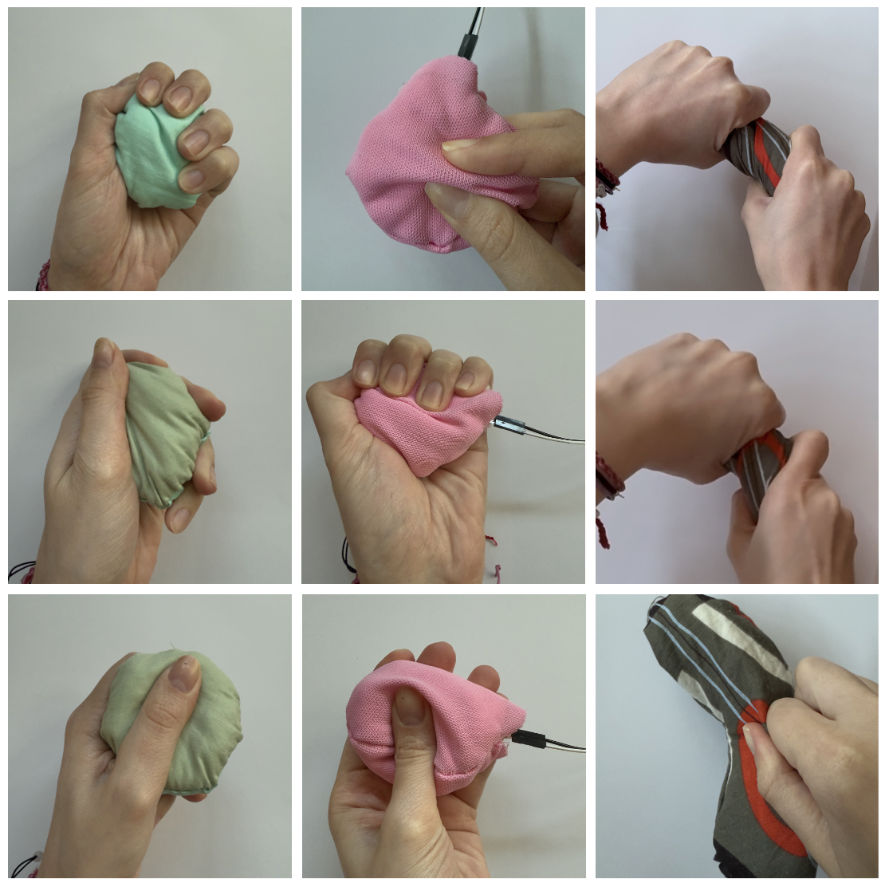
this didn't work
Fabric squeeze prototypes, tested for grip and gesture.
Final solution
Three buttons, integrated into the form.
Buttons give immediate, unambiguous confirmation. Concentric ring layout means each is distinguishable by touch, usable from a pocket without looking.
Short / long press differentiates severity
Raised ring edges guide fingers without looking
NeoPixel confirms input, blue breathing pulse for anxiety
No accidental logging during ordinary handling
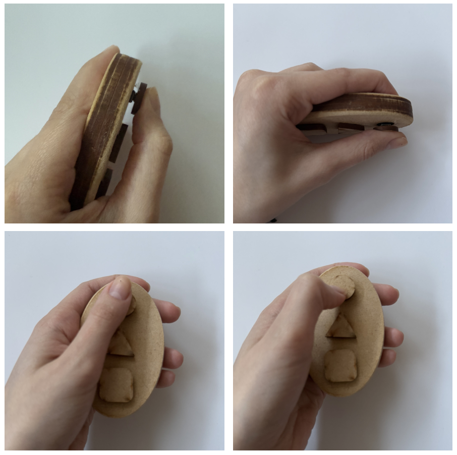
MDF prototypes, testing edge profiles and button shapes.
§ 06Decision 02
Three symptoms, no more.
A second gastroenterologist interview asked which daily GI factors matter most to capture. Pain, anxiety, and bowel movements were chosen because they are spontaneous, identifiable in the moment, and the visible surface of deeper patterns. This lets the app generate targeted reflective questions rather than asking users to fill in a form.
Design principle
"Capture the minimum data that allows meaningful questions to be asked at end of day."
the final shape
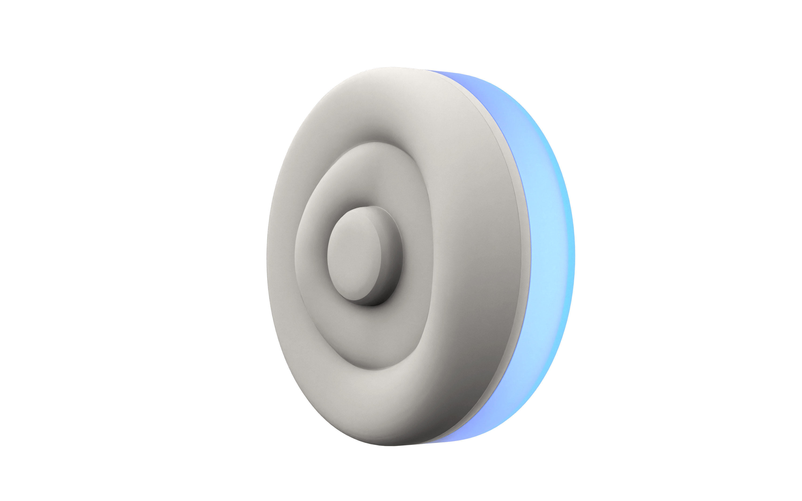
01 · Centre button
Pain
The most urgent symptom. Short press = mild, long press = severe.
02 · Middle ring
Anxiety
Triggers a blue NeoPixel breathing pulse, 5s inhale / 5s exhale, as immediate calming feedback.
03 · Outer ring
Bowel movement
Three press durations differentiate between normal, loose, and hard movements.
§ 07Concept & formhow the ring emerged
From many directions to a silicone ring.
The brief was a calm object that lives in a pocket, presses without looking, and feels nothing like a screen. Many directions, many MDF prototypes, then silicone, on the way to the final form.
1 · Ideation
Many directions, all tactile.
Initial concepts ranged from a ripple disc, a soft cube with corners-as-buttons, a pebble, to a leaf pod. Every direction was anchored to one constraint: it had to be operable by touch alone, in a pocket, without a screen.
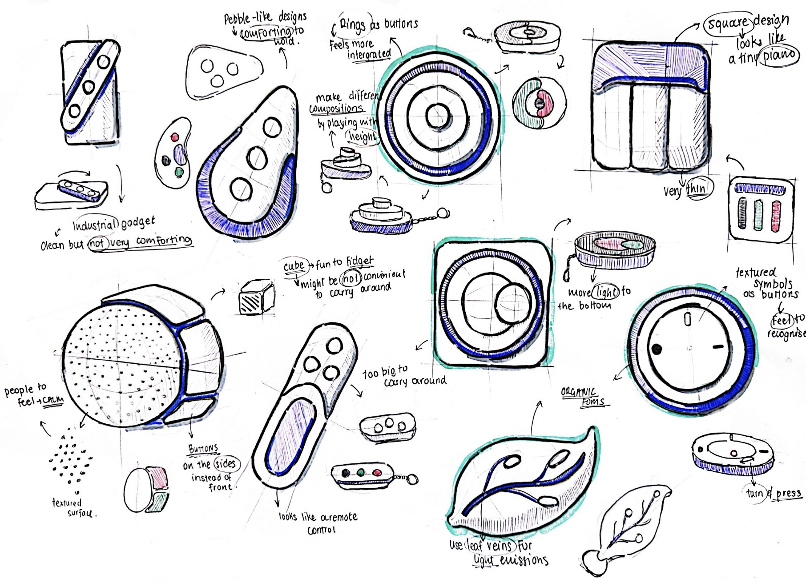
Concept directions, touch-only.
2 · MDF prototypes
Many forms, in the hand.
Laser-cut MDF and acrylic let me test grip, button placement, and accidental-press resistance on each direction. Buttons and lights were wired into each prototype so users could feel the actual interaction, not just the silhouette.
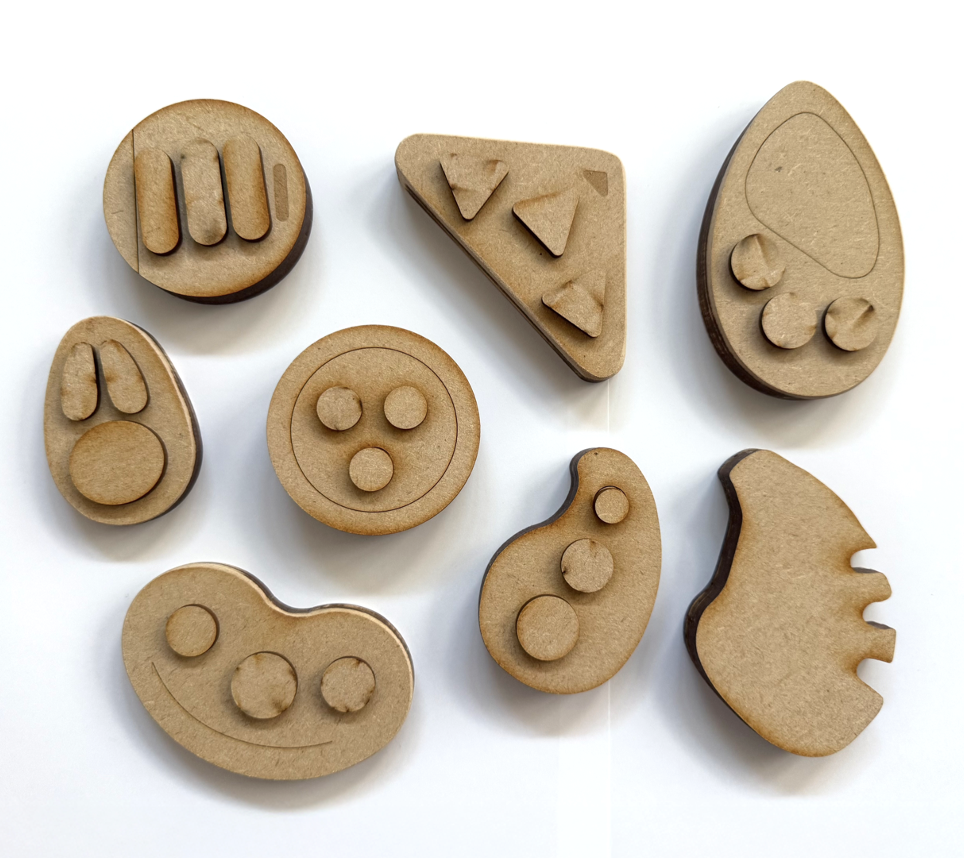
MDF prototypes, button-wired for testing.
3 · The ring, in silicone
Three concentric rings, cast in silicone.
The disc-with-rings won across every test: locatable by touch, no accidental presses, and a layout that maps to symptom hierarchy — centre for pain, middle for anxiety, outer for bowel. Cast from two-part silicone in matte tones that read as object, not gadget, with a NeoPixel ring underneath for the breathing pulse.
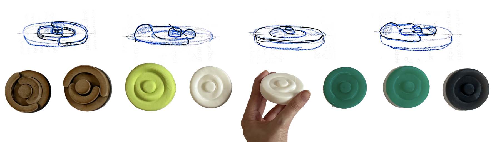
MDF, then 3D print, then cast silicone.
§ 08Building it for realelectronics & path to production
A working device, pocket-sized.
The internals went through three microcontrollers before settling on the SparkFun Qwiic Pocket, the only board small enough to fit the final 60 mm form factor while still carrying Wi-Fi. The full electronics stack runs on a 1200 mAh LiPo, charges over USB-C, and pushes button events to the app over Blynk IoT.
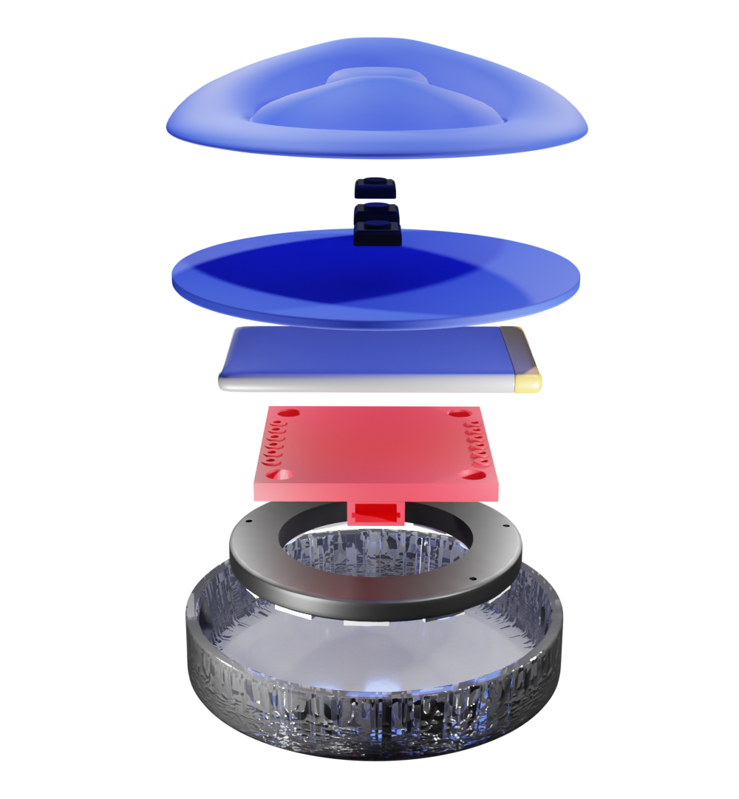
Exploded view, every part from silicone shell to SLA base.
01
Silicone shell + buttons
Two-part cast silicone with three integrated buttons. Skin-safe, water and UV resistant, dyed in matte finishes. Sits over a 2 mm PLA stiffener so presses register without flex.
02
1200 mAh LiPo + USB-C
Connected via 2-pin JST. Charges through a USB-C port machined into the SLA base. Sized for several days of typical use between charges.
03
SparkFun Qwiic Pocket
Wi-Fi-capable microcontroller chosen for its compact footprint, the third board after testing M5StickC Plus and Arduino Nano 33 IoT. Pushes events to Blynk over Wi-Fi.
04
NeoPixel ring, 12 LEDs
Mounted under the rear face. Pulses blue at 5 s inhale / 5 s exhale for anxiety, confirms button input, and shows connection and battery state.
05
Blynk IoT cloud
Each button press is sent as an event to the Blynk cloud, which the app retrieves via auth token. A demo mode bypasses the cloud for offline review.
Path to production
The prototype uses PLA for the stiffener and SLA resin for the translucent base. Both are slated for swap to injection-moulded polypropylene in production for durability and cost. The current SparkFun board is a development part, the production direction is a custom PCB sized to the same 60 mm footprint.
Chapter B · The app
What a pocket object can't carry: reflection, history, and a trail for the doctor.
§ 09Decision 03
Testing the interaction model before designing the UI.
Four parallel low-fidelity prototypes were built in Figma, each testing a different input philosophy, and put in front of 5 participants over several days. The winning method defined the entire app's interaction model.
Method 01 · Winner
Categorised lists
Preferred, 3 / 5 participants
Why it won
Fastest to complete. No typing. Familiar mental model. Worked when participants were tired or in a hurry.
Method 02
Icons & illustrations
Backup, 2 / 5 participants
Why it lost
Ambiguous icons forced re-reading. Several participants found the visual language too playful for a tool meant to support a chronic medical condition.
Method 03 · 04
Free text & voice
Rejected, 0 / 5 preferred
Why it lost
Free typing felt like another effortful task at the end of an already tiring day. Voice input was rejected for use in shared or public settings. Both methods raised cognitive load instead of reducing it.
What it changed
From "open input" to structured choice.
Every input the app would ever ask for got rebuilt as a multiple-choice prompt. No blank fields, no "type your answer here", no voice capture. Voice survived in one place only, as the AI's voice when reading the daily reflection question aloud, never as the user's.
App principle
"The device handles all logging. The app exists for reflection, and reflection happens at the user's most tired moment of the day."
§ 10The reflection systemquestions in, insights out
Eight to twelve questions, generated from what was logged.
Three banks behind the scenes, one for bowel, one for pain, one for anxiety, plus an end-of-day wrap-up. When two symptoms occur close together, the app pairs them and asks a conditional question that links the two.
Conditional questions
Pain + BowelTap for the question ↻
"Did the pain lessen after going to the toilet?"
Anxiety + PainTap for the question ↻
"Did the anxiety arrive before the pain, or after?"
Anxiety + BowelTap for the question ↻
"Did stress feel like it changed what happened in the gut?"
What the answers become
Plain, actionable sentences. No graphs.
Answers are written back as short, plain-English insights, prioritised by urgency.
Priority
Pain has eased after bowel movements three times this fortnight.
Pattern
Anxiety tends to precede pain by 30 to 60 minutes on weekdays.
Food
Bowel discomfort followed dairy four times this month.
Advice
Try the device's breathing pulse next time anxiety arrives.
§ 11IA + visual systemthe logo, at the centre
Four tabs, with a central button for the only screen that asks.
Four bottom-nav tabs cover everything passive, Home, Insights, Resources, Settings. The reflection flow sits on a fifth, central button, raised above the bar, marked with the logo. It's the only place the user is asked to think, and it lives where the app's geometry naturally points.
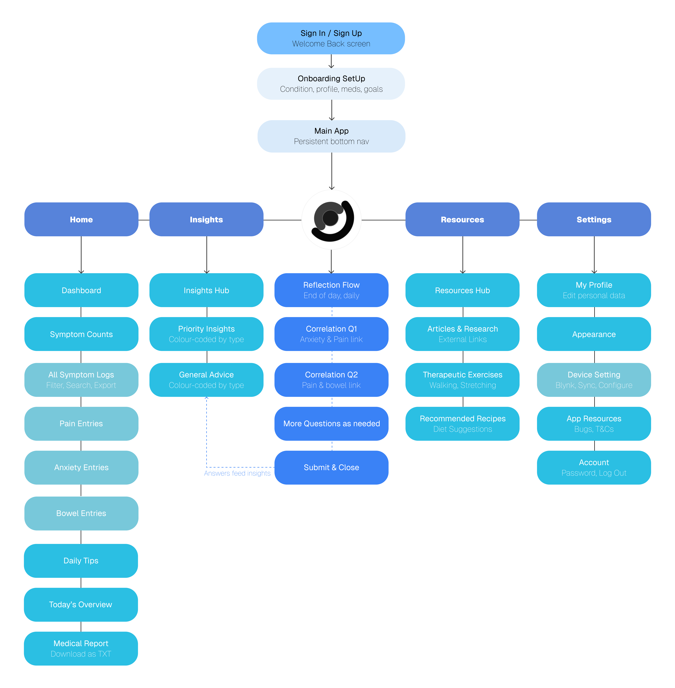
Site map: a five-tab main app, with reflection at the centre.
Soft blues for calm, three accents for the symptoms.
The base palette is shades of blue, chosen against the clinical grey of existing GI apps and the pink of period-tracker conventions. Symptoms keep three warm accents so they read at a glance in logs and insights.
Base
Blue · deep
Blue· bright
Blue · green
Blue · cream
Symptoms
Pain · red
Anxiety · blue
Bowel · yellow
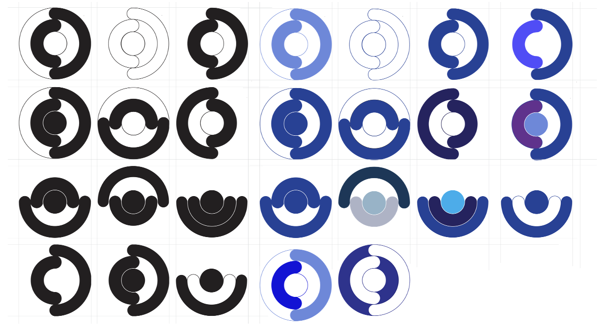
Three concentric rings became the o-letter, then the name.
The logo named the product.
The mark started as the device's three concentric rings, simplified into a circular form that doubled as the letter o. The product needed a name with an o in it that the logo could replace. Onaka, Japanese for "tummy," fit the meaning of the product and the shape of the mark in a single word.
§ 12Final screensthe app, in motion
Built in Lovable. Connected via Blynk.
A walking prototype, end to end, hardware to insights. Below, the app demo running on the device, then the six screens that anchor the day-to-day experience.
App walkthrough.
01 · Home
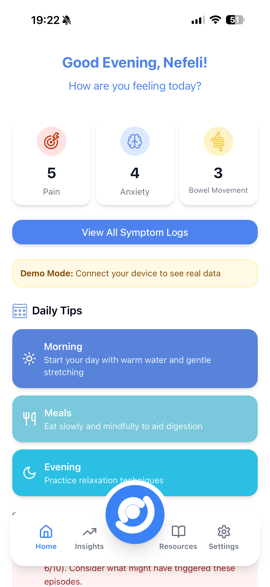
Today's counts and tips.
02 · Symptom logs
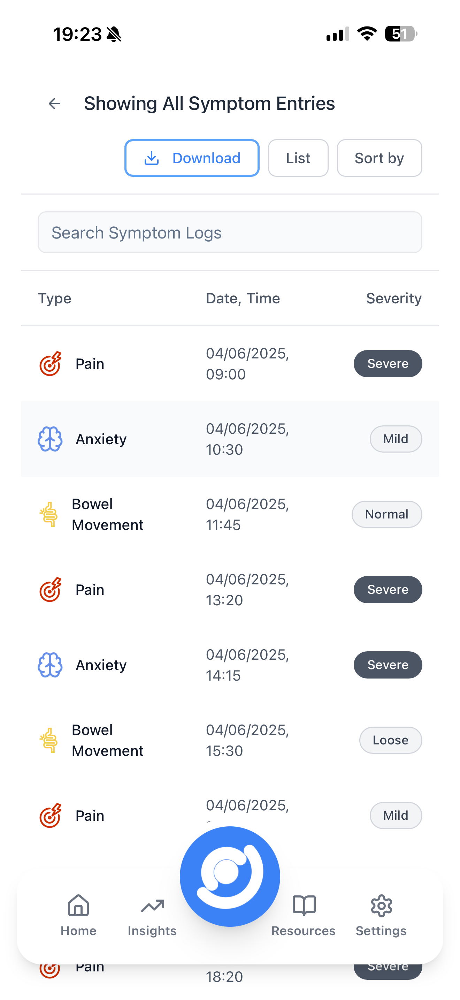
Entries with time and severity.
03 · Reflection
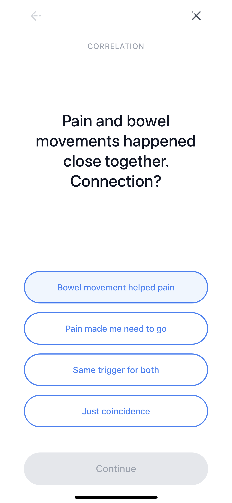
Full-screen, structured-choice questions.
04 · Insights
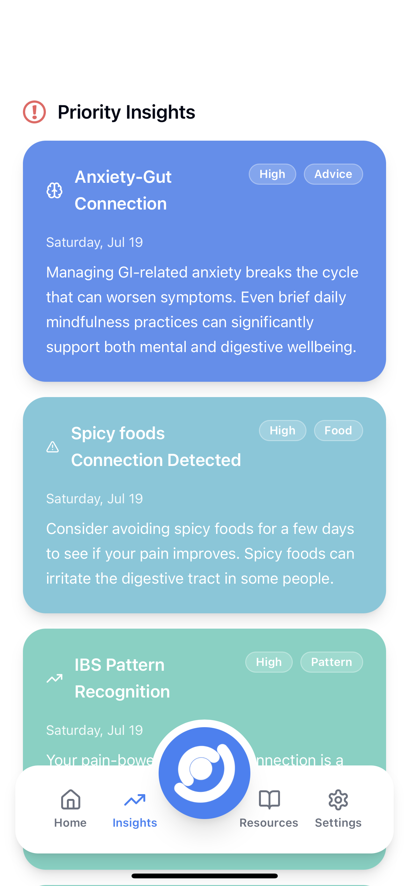
Plain-language sentences, prioritised.
05 · Resources
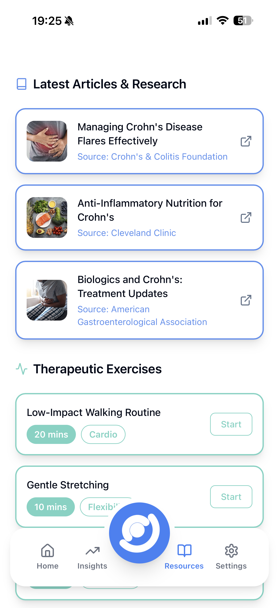
Articles, exercises, recipes by condition.
06 · Doctor report
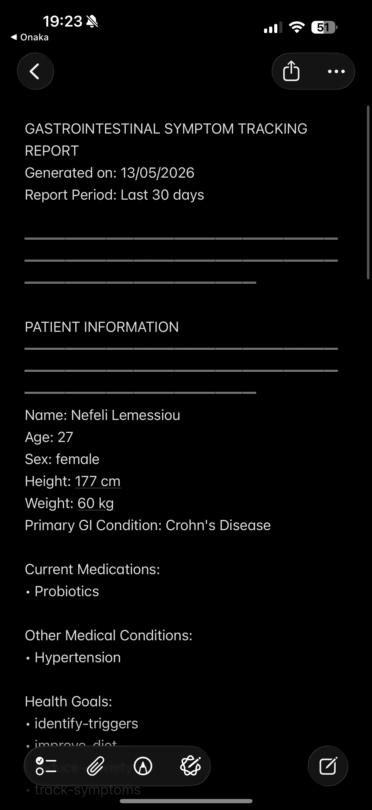
Downloadable medical report.
§ 13Final productall together now
Onaka, a system designed around calm.
proudest of this
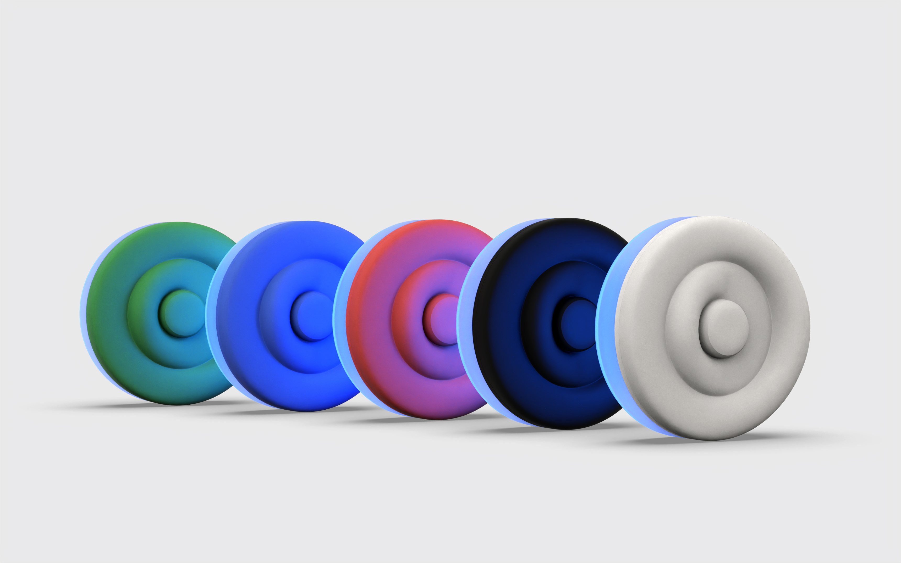
Five colourways, each with the signature blue base glow.
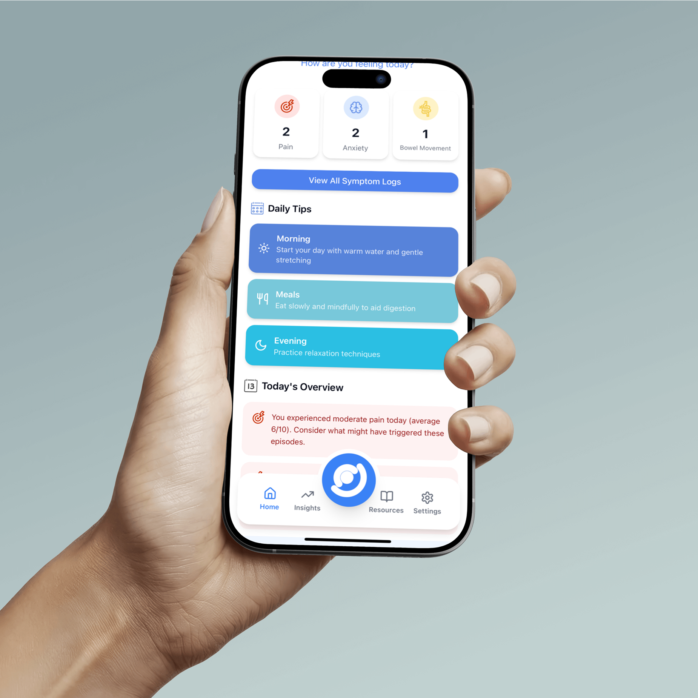
Home dashboard — daily tips and today's overview.
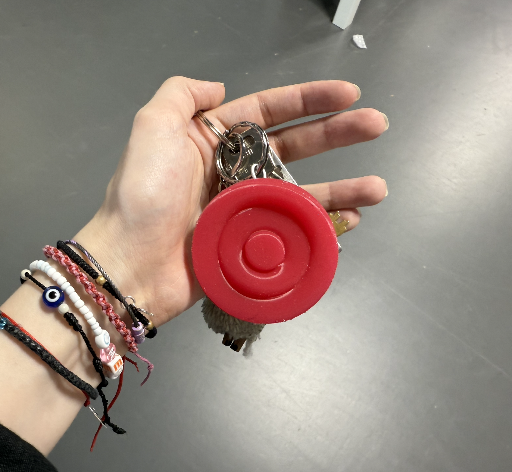
Pocketable, on a keychain for everyday carry.
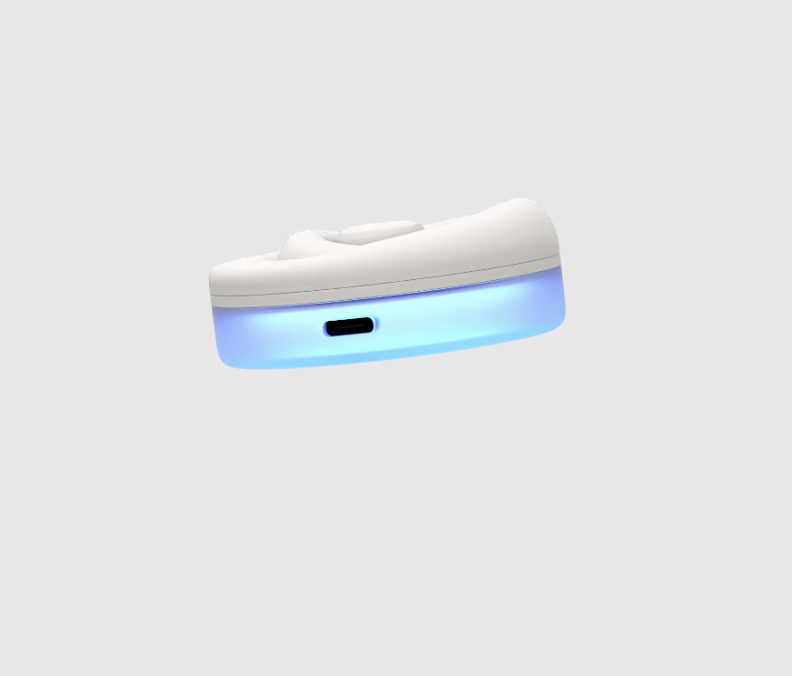
USB-C charging in the glowing silicone base.
Demonstration video: the device and companion app in use.